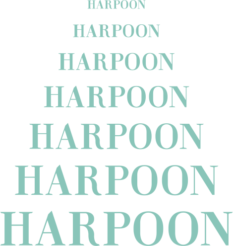

Leviathan is an ancient sea creature described in the Hebrew Scriptures. The beast is often portrayed with very skinny extremities, a thick body, giant claws and teeth like daggers. Leviathan is a horror to mankind and a wonderous work of Yahweh.
Influenced heavily by stone-carved lettering and the depiction of the ancient beast, the Leviathan display face draws many of its defining features from the aesthetic created by the chisel. It’s characterized by extreme stroke contrast, angled serifs, “chiseled” terminals, and a focus on all-caps as utilized by Roman Square Capitals.
Stone-carved lettering is the process in which a wide array of letterforms are chiseled into stones of various kinds and sizes in order to create a very permanent product. At its supposed conception, outlines of Roman letterforms were painted onto stones during Roman antiquity and were later carved after revision and realization of the need for permanence.
Carving stone is one of the oldest art forms of humanity. Since prehistoric times, humans would carve stone representations of the world around them into soft stone with a harder stone. Since then, stone carving was fiercely adopted by the Greeks and ancient Romans, elevating the craft to where humans and artifacts from the world could be represented with impeccable accuracy. Stone carving was used in the creation of monuments, architecture, documents, and fine art.
Stone-carved lettering had many influences on typography, but the largest contribution is the development of serifs and the Roman letter. As the Romans felt the need for a different style of type for inscriptions, they developed Roman Square Capitals. Roman Square Capitals are an all-caps alphabet characterized by rigid geometry, graceful curves, sharp / straight lines and edges, thick and thin contrast in strokes, and usually a somewhat wide proportion to help the letters hold their place. As this alphabet was brushed onto stone and later carved, the artist would follow the flared ends at the end of brush strokes with his chisel, creating the extra ornamentation we now know as “serifs”.
Stone lettering contributed the foundation for most of the old style, transitional, modern, and slab serif typefaces we have today. It also established the refined, formal aesthetic of letters that we see many modern typefaces strive for. Upon the Roman Square Caps being carved into stone, the letters were much more legible from distances and on big monuments than any other form of letter would have been in their time. Another big contribution to typographic form is the perception of depth within letters. The thick strokes of carved letterforms were usually v-cut, meaning the stoke was left carved out with two planes with the deepest part being in the center (kind of like a valley between two mountains). This 3D, engraved form led to the creations of many typefaces that play on light and depth within the letterforms that would come afterwards such as Chevalier (2000) and PF Monumenta Pro (2006).
Leviathan was patterned heavily after modern serif typefaces with an emphasis on stroke contrast and stone carving aesthetics. It has a high x-height in relation to other modern typefaces such as Bodoni, and stands strong in titles and larger uses.
JOSHUA KEMMER / 2016